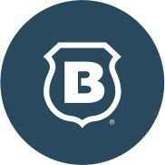
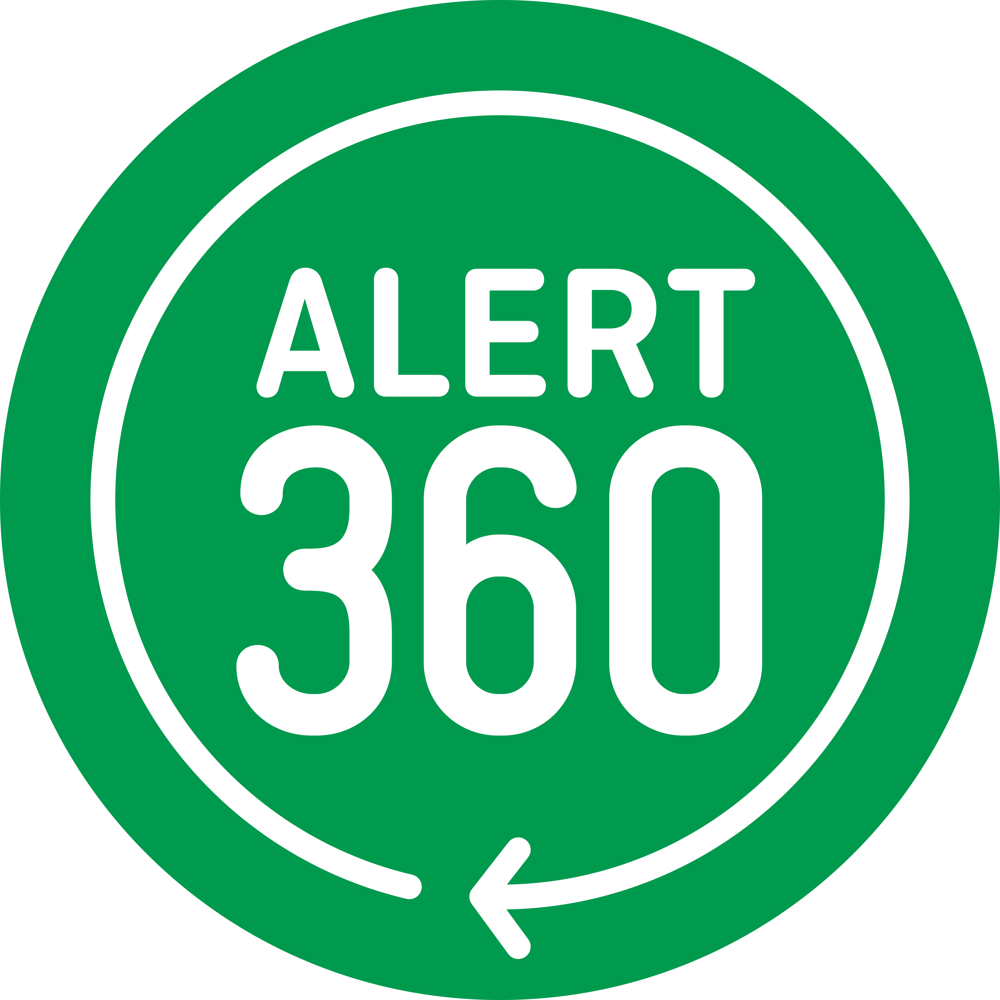

About Us
Cobos Home Security is a home secuity company located in Cumming, Georgia. Since our establishment in 2023, our mission has always been to provide our customers with great service and peace of mind in ensureing that their homes are protected and watched by the best names in the buisness along with the most reliable equiptment availiable on the market. Whether you're a new homeowner in a single-room apartment, or a parent with multiple children to look after, you can garuntee on to to providing and informing you with the best service possible to suit your need, both now and in the future.
About Our CEO
"Customer satisfaction is the true heart of any buisness, and those who have a great relationship with their customers are going to make it far in whatever market they're in."
Since our establishment in 2023, Giovanni Cobos has always led our company with a customer-first mindtality. In his view, the key to a successful buisness has always been customer satisfaction. Training in the home security buisness when he was just fourteen years old, Giovanni has seen and met many differnet people from many different homes that come from all walks of life. Yet the one thing that they all have in common is their expectation of great customer service. Giovanni will never give up on this expectation, and neither will anyone else who works for Cobos Home Security.
Here are some facts about Giovanni!
- Lived in both Georgia and California.
- He has been training in the home security buisness when he was fourteen years old.
- He was the youngest technician ever hired by Brinks Home; joining their league of field technicians in 2020 to 2021 at the ages of 19 to 20 years old.
About Our Partners
Cobos Home Security are partnered with two of the best names in the home security buisness: Brinks Home and Alert360!

Being the second larget home security company in the United States, Brinks Home is always ready to respond to any emergency at your home. Their central monitoring station operates 24 hours a day, and 7 days a week. So no matter the time or day, whenever there is a break in at your home, Brinks Home will call you in less than fifteen seconds.

Alert 360 currently one of the largest home security companies in Georgia, and they truley know the region. With thousands of homeowners being monitored by Alert 360, they will always have your back whether you are asleep or off at work.